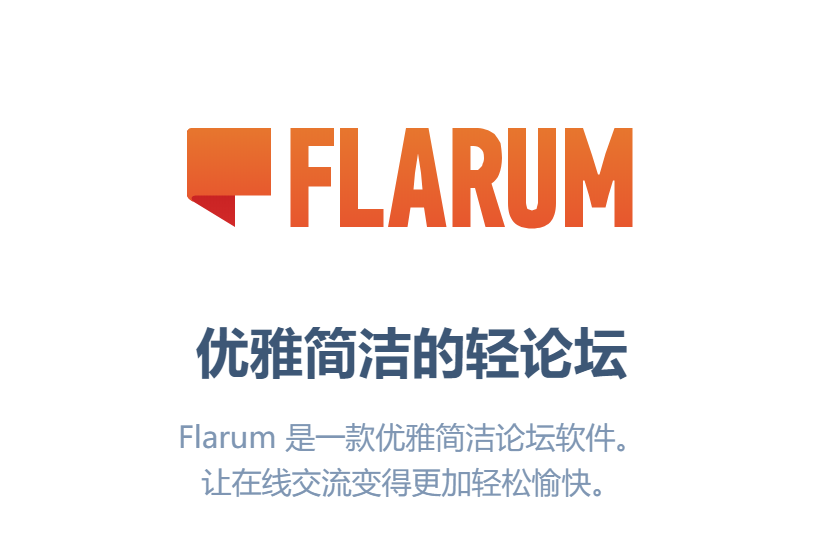
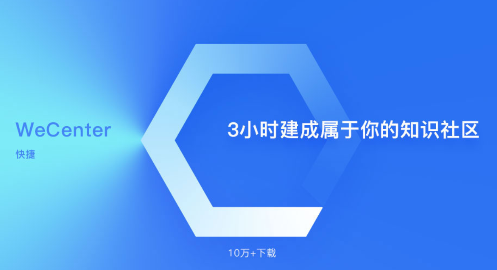

什么是开源？
什么是开源？
一句话来说，开源指的是那些源代码或源设计可以被大众使用、修改发行的软件或设计体。
这是一个小型的开源小知识科普网站，帮助我们了解开源系统一路走来的艰辛和成长。也可以帮助我们理解开源的意义——或许我们从来没有想过，开源离得我们如此之近，不管你从事什么行业，开源早已渗入我们的生活，改变了这个世界。没有开源软件，现在的互联网根本无法存在，开源的历史可以追溯到ARPANET建立。开源在今天已经不再是一个时髦的词了，对于互联网的开发者来说，它现在就像空气和水一样，就在我们的生活中。
如今的主流开源参与者，不再只是个人爱好者，更多的是著名IT企业的员工，商业公司也纷纷支持。IT企业投入了大量人力在各个开源社区和项目上，包括开发测试，项目协调，运营推广等。
开源历史大事件 >>> more


开源著名人物 >>> more
为什么要使用开源协议？ >>> more
一、开源软件更安全
再也想不出比最近Coverity发现安卓核心漏洞这样更好的例子了，Coverity发现了安卓核心的漏洞充分说明了开源软件的安全性是超级可靠的。这个发现为何如此令人振奋呢，正如我们近日注意到的，漏洞之所以能够被发现是因为安卓的核心代码都在公众的视野之中。
虽然说安卓不是一个100%的开源程序，但是这个例子还是能够充分的反映著名的Linux之父Linus Torvalds的“Linus法则”：“曝光足够，所有的Bug都是显而易见的。（Given enough eyeballs, all bugs are shallow.）”他的意思是说，只要有足够多的人使用和测试代码，任何缺陷都会被找出来，并被很快解决掉。这和昂贵的商业软件一直所宣称的“不公开更安全”的论调明显是背道而驰的。
常见的开源协议 >>> more

Mozilla Public License
MPL License，允许免费重发布、免费修改，但要求修改后的代码版权归软件的发起者。这种授权维护了商业软件的利益，，它要求基于这种软件得修改无偿贡献版权给该软件。这样，围绕该软件得所有代码得版权都集中在发起开发人得手中。但MPL是允许修改，无偿使用得。MPL软件对链接没有要求。
BSD开源协议
BSD开源协议是一个给于使用者很大自由的协议。可以自由的使用，修改源代码，也可以将修改后的代码作为开源或者专有软件再发布。 当你发布使用了BSD协议的代码，或则以BSD协议代码为基础做二次开发自己的产品时，需要满足三个条件：
1． 如果再发布的产品中包含源代码，则在源代码中必须带有原来代码中的BSD协议。
2． 如果再发布的只是二进制类库/软件，则需要在类库/软件的文档和版权声明中包含原来代码中的BSD协议。
3． 不可以用开源代码的作者/机构名字和原来产品的名字做市场推广。
BSD代码鼓励代码共享，但需要尊重代码作者的著作权。BSD由于允许使用者修改和重新发布代码，也允许使用或在BSD代码上开发商业软件发布和销售，因此是对商业集成很友好的协议。而很多的公司企业在选用开源产品的时候都首选BSD协议，因为可以完全控制这些第三方的代码，在必要的时候可以修改或者二次开发。
搞快点！来点资源 >>> more
Flarum |
WeCenter |
Layui社区系统 |